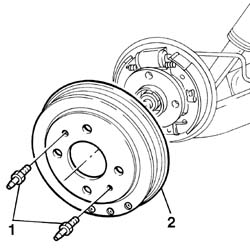
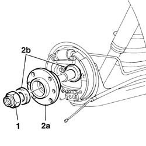

4450D10 hub of one rear wheel, l/h or r/h - r+r with wheel removed
- Path
- Procedures > 44 SUSPENSION AND WHEELS > 4450 HUBS AND WHEELS > 4450D REAR WHEEL HUBS > 4450D10 hub of one rear wheel, l/h or r/h - r+r with wheel removed
- Kind
- repair procedure (removal / refitting; the operation number is the code)
- Applies to
- all engines; all production periods
- Interactive page
- https://sloeber94.github.io/elrnDB-fPnd/en/#/2752839
Applies to: all engines; all production periods
 Removing
Removing
 Refitting
RefittingPlace the car on a ramp.
4450D70 hub cap of one rear wheel, l/h or r/h - r+r
1. Undo the fixing pins.
2. Remove the rear brake drum.

Applies to: all engines; all production periods
1. Undo the rear wheel hub nut.
2. Remove the rear wheel hub (2a) complete with spacers (2b).

Applies to: all engines; all production periods
Refitting
RemovingFit the rear wheel hub complete with spacers.
Tighten the rear wheel hub nut to torque.
 | Fastening | Component | Ø | Value (daNm) |
|---|---|---|---|---|
- | Nut | REAR WHEEL HUB WITH BEARINGS | M22 x 1.5 | 28 |
Fit the rear brake drum and tighten the retaining pins.
| Fastening | Component | Ø | Value (daNm) |
|---|---|---|---|---|
- | Bolt | REAR BRAKE DRUM | M12 | 1.2 |
4450D70 hub cap of one rear wheel, l/h or r/h - r+r
Remove the vehicle from the ramp.